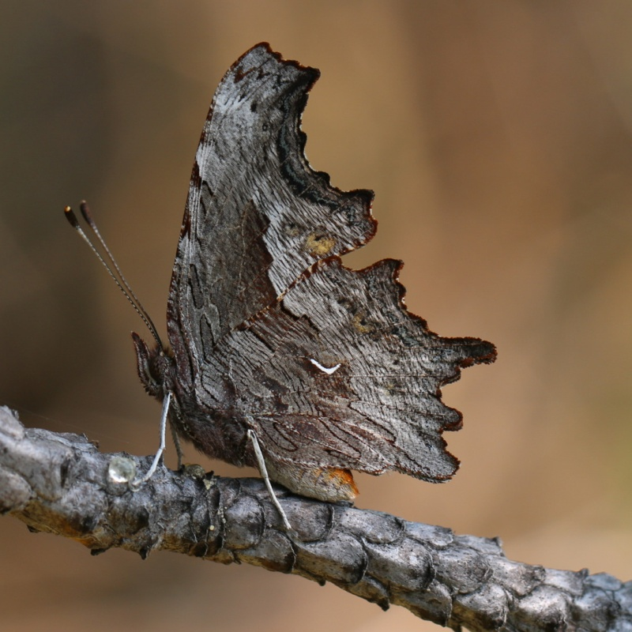
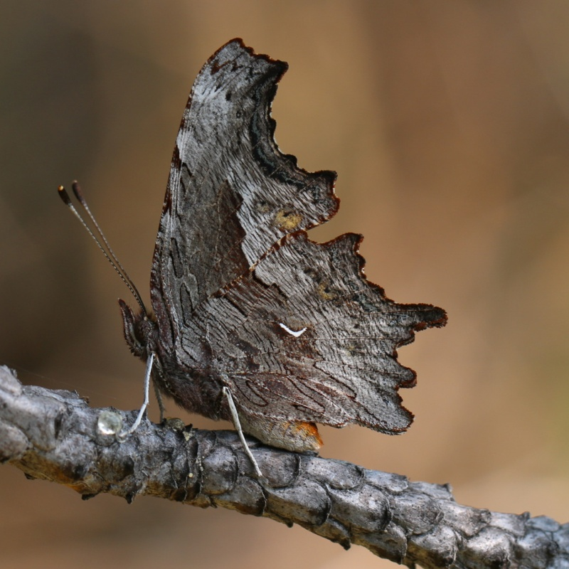

Polygonia gracilis
- Common name
- Hoary Comma
- Family
- Nymphalidae
- Family common name
- Brush-footed butterflies
- On the wing
- E February to October, peaks in May and August.
One or two generations. - Habitat
- Mountains over 3000', streams, roads, trails, meadows among forest.
- Larval host:
- Rhododendrons and currants.
- Nectars on:
- Sap from willow wounds (sapsucker holes).
- Abundance
- C